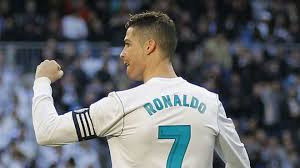
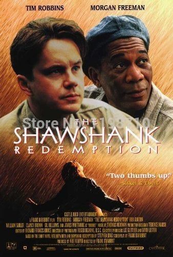

My hometown is a beautiful small city of Bangladesh named Narail.I am from Lohagora a subdistrict of Narail.Narail is blessed by some famous people.One of them is hounarable MP Mashrafi Mortaza who is also the captain of Bangladesh national cricket team.The famous artist SM Sultan is also from Narail.Narail is well known for its natural beauty.
My favourite hobby is reading book. In my leisure time I read books. My favourite writer is Muhammad Zafar Iqbal.Some of my favourites book of him are Jolomanob,Abonil,Zara Biobot,Ruhan Ruhan,Pheonix,Amar bondhu Rashed etc.I love also Humaun Ahmed's Himu.It's my favourite book.
My favourite sport is Football. I am a great fan of football. I support Real Madrid in club and Brazil in national team.My favourite footballer is Cristiano Ronaldo.He is one of the greatest footballers ever.
There are many favourite songs of mine.Some of them are Linkin park's "In the End", Micheal Learns's "Take me to your heart", scorpion's "Wind of change"etc.
My favourite movies are The Shawshank Redemption,Troy,Gladiator,Inception etc.
"Your love makes me strong, your hate makes me unstoppable."-Cristiano Ronaldo
"Imagination is more important than knowledge. For knowledge is limited whereas imagination embraces the entire world,stimulating progress,giving birth to evolution."-Albert Einstein